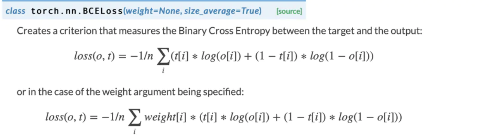

为什么YOLOv3分类损失使用BCE

文章目录
文章主要通过不同的任务介绍BCE与CE。
图像二分类：
Sigmoid函数和Softmax函数用于表示概率在二分类问题中没有什么问题。其后都可以加交叉熵损失。
图像多分类：
由于分类任务中，各个类别之间是互斥的，因此要保证多个类别的概率值之和为1（在类别概率值加和为1的情况下，一个类别概率值增加时必然有其他类别概率值减小，体现了各个类别之间的互斥），并且最终取出概率值最大的类别。
而且SoftMax会强化较大值，削弱较小值，所以适合多任务。
这时候由于Sigmoid的性质，不能用于图像多分类任务中。
多标签分类：
多标签分类（或者叫多标记分类），是指一个样本的标签数量不止一个，即一个样本对应多个标签。
各个标签之间独立，没有概率值之和必为1的要求。这时候适合使用Sigmoid。
例如80个多标签进行分类，损失函数为BCELoss，则预测值长度为80，表示每个类别为1的概率，然后对输出向量的每个元素单独使用交叉熵损失函数，然后计算平均值。

文章作者 杨浩伟
上次更新 2023-02-13